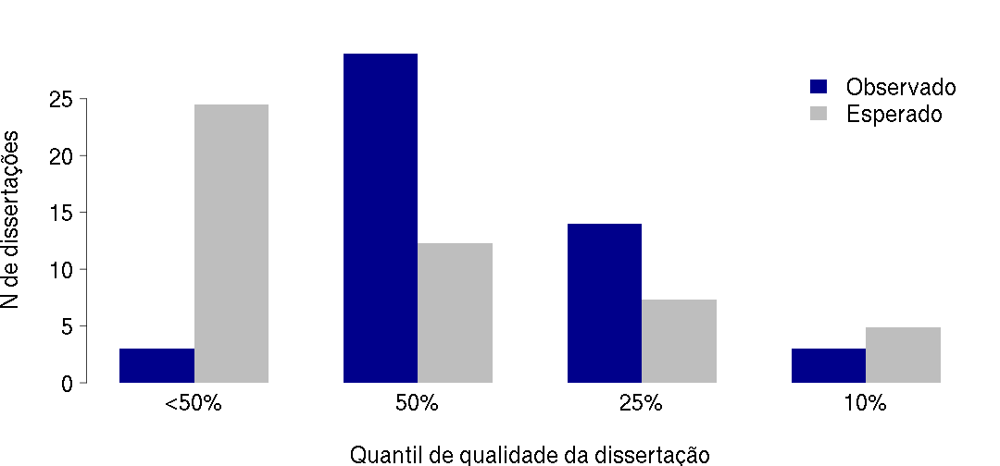
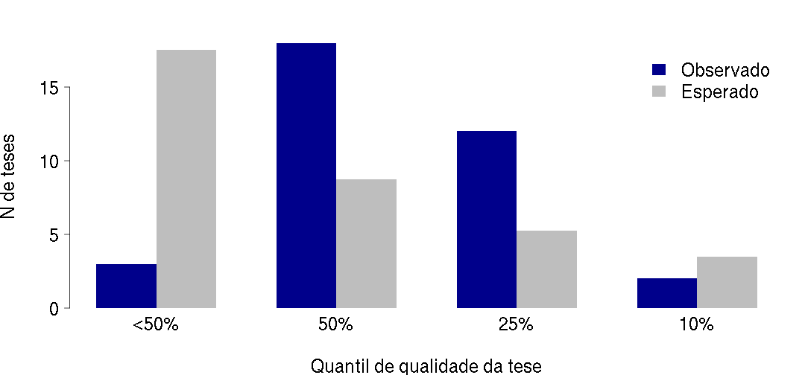
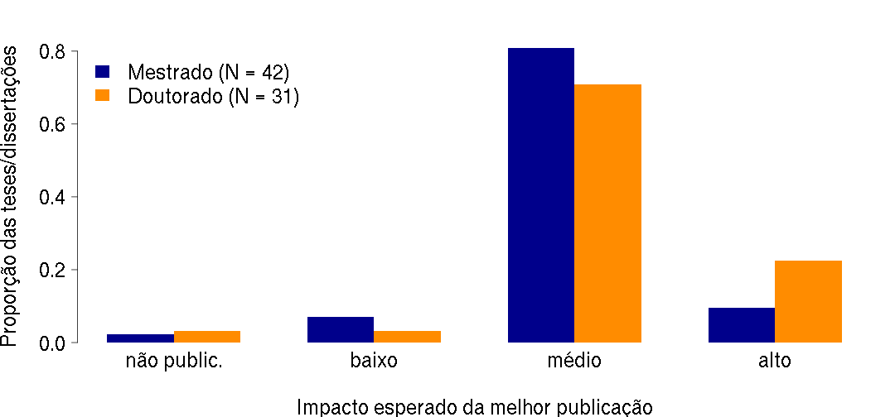
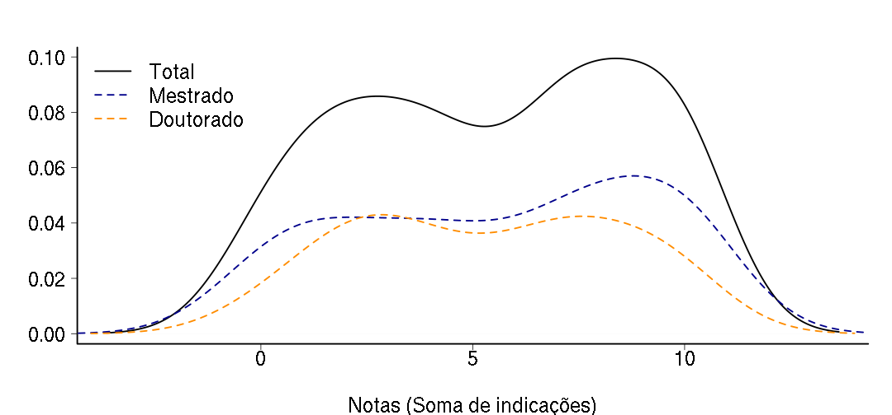
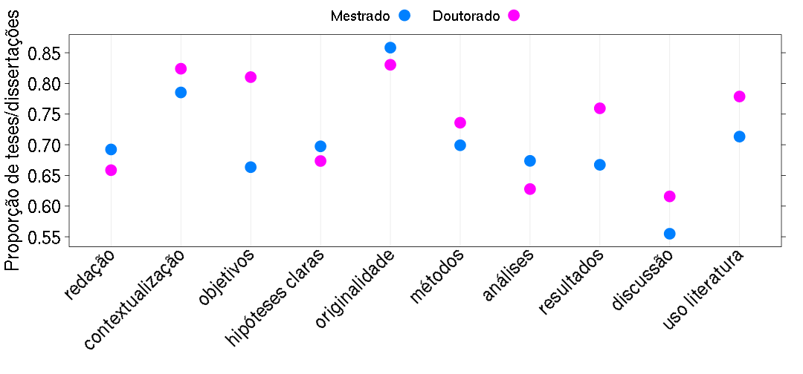
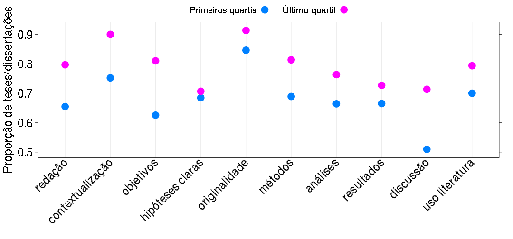
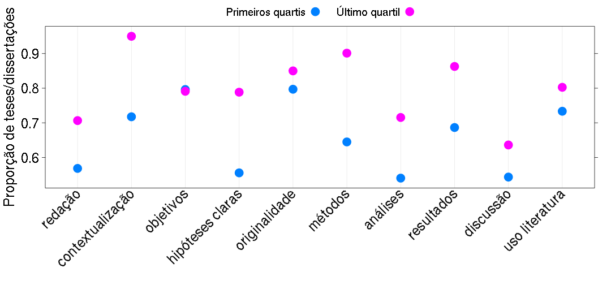
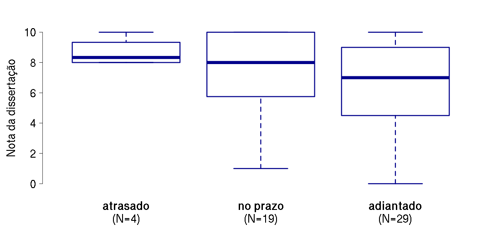
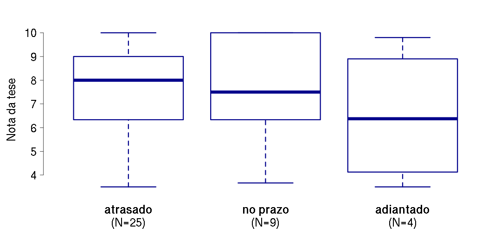

Comissão de Pós-Graduação
Instituto de Biociências da Universidade de São Paulo
Considerando o conjunto de dissertações e teses que você já avaliou e orientou, o presente trabalho enquadra-se:


O melhor artigo decorrente da dissertação ou tese poderia ser publicado em periódico em qual categoria de fator de impacto em sua área:

Quais dos quesitos a seguir o trabalho satisfaz de maneira muito boa ou excelente? Não marque nenhuma opção caso nenhuma delas se aplique ou marque mais de uma se achar adequado.
(continua)
Quais dos quesitos a seguir o trabalho satisfaz de maneira muito boa ou excelente? Não marque nenhuma opção caso nenhuma delas se aplique ou marque mais de uma se achar adequado.





